Мета та поставновка задачі
Тема: ВЗАЄМОДІЯ WEB-ЗАСТОСУВАНЬ З СИСТЕМОЮ КЕРУВАННЯ БАЗАМИ ДАНИХ (СКБД). ОБРОБКА РЕЗУЛЬТАТІВ SQL-ЗАПИТІВ У PHP-СЦЕНАРІЇ.
Мета: придбати практичні навички підключення до СКБД, вибора бази даних, виконання запиту, отримання результатів, відключення від СКБД
ХІД ВИКОНАННЯ РОБОТИ
1. У звітному HTML-документі розмістити тему та постановку задачі лабораторної роботи №7.
2. Завантажити ПК «Денвер» або «Open Server» або той програмний комплекс, який був встановлений на
попередній лабораторній роботі
3. Відповідно до варіанту індивідуального завдання Таблиці №1 (номер варіанта відповідає останій цифрі
студента у списку групи, наприклад, студент 18 за списком – буде виконувати 8 варіант) потрібно:
a. визначити класи об’єктів предметної області, дані які будуть зберігатися у БД;
b. створити інфологічну модель;
c. нормалізувати реляційну базу та перейти до датологічної моделі;
4. Для прискорення та полегшення розробки інфологічної моделі , яка містить таблиці і зв’яки між ними,
рекомендовано встановити програму MySQL Workbench.
5. Реалізувати БД в СУБД MySQL використовуючи веб-інтерфейс для роботи із сервером MySQL phpMyAdmin.
6. Написати скрипти на PHP для внесення даних до БД, виведення даних на екран та для пошуку даних в БД.
Сутності та атрибути
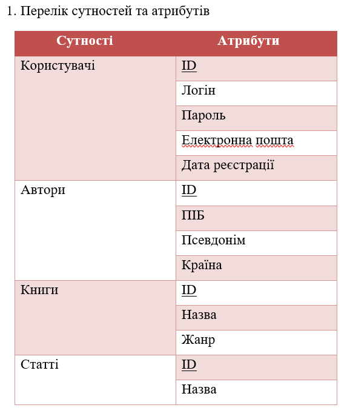
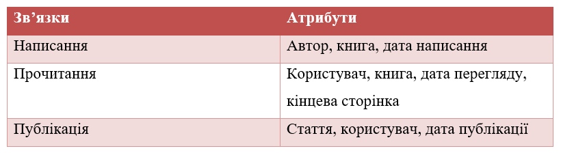
Інфологічна модель
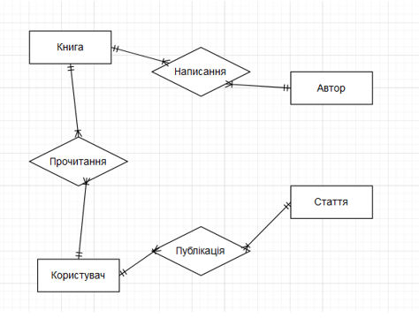Датологічна модель
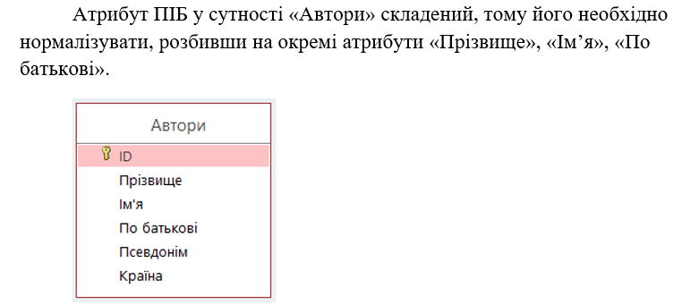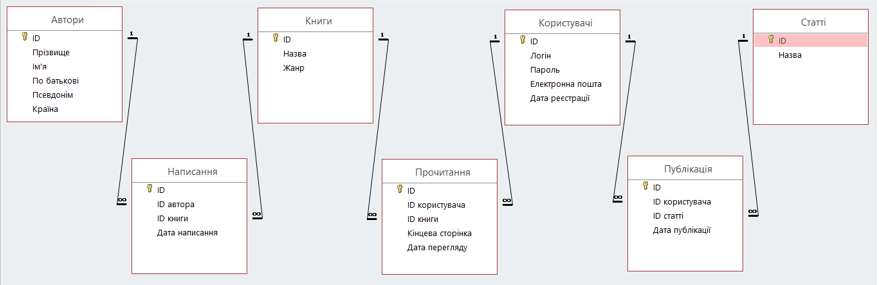
Структура таблиць
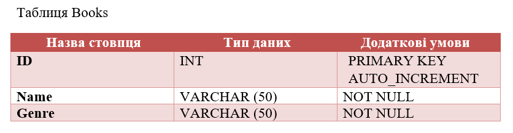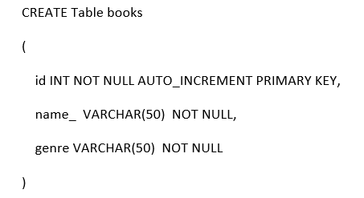
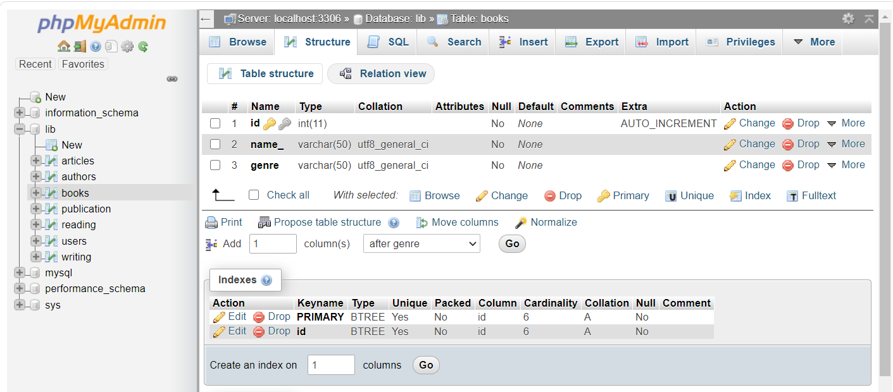
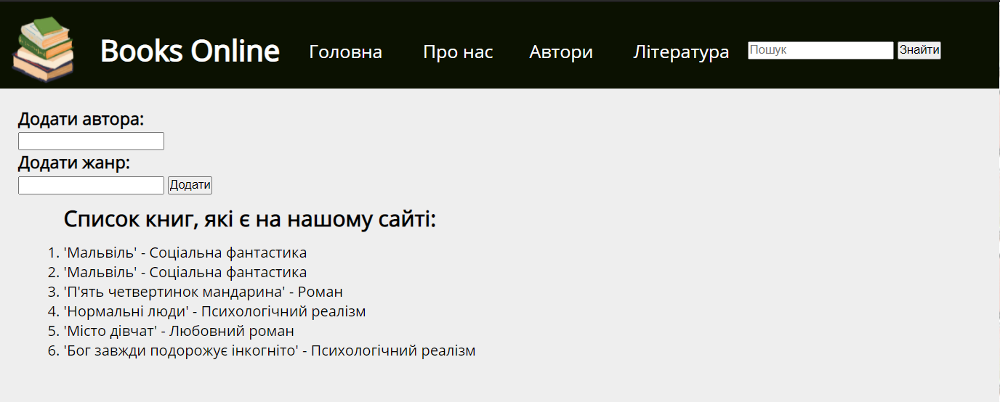
Підключення БД
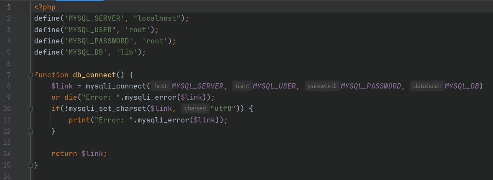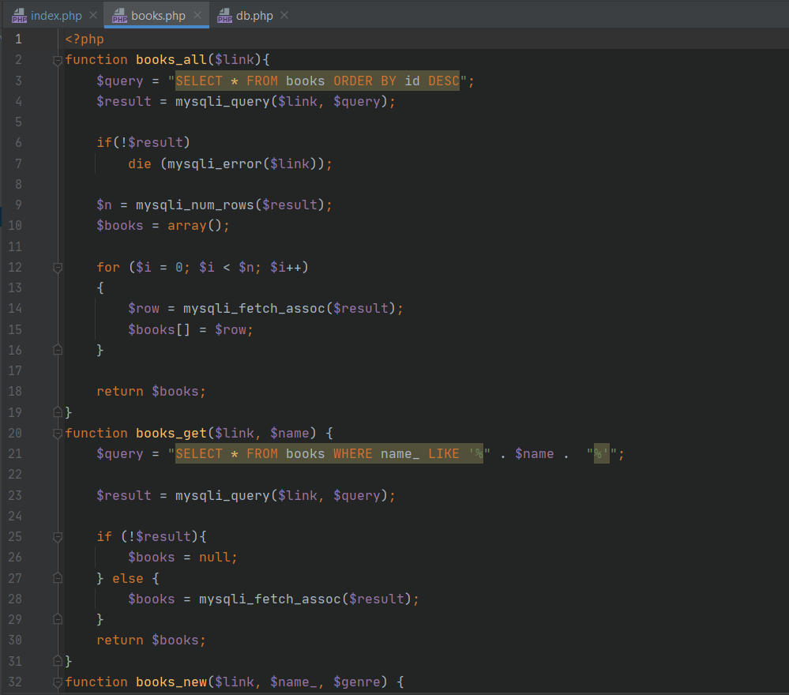
Висновок
На даній лабораторній ми навчилися створювати свою базу даних, використовуючи SQL, та працювати з нею, використовуючи РНР, а саме додавати таблиці, додавати дані до таблиці, відображати їх вміст та додавати дані до БД через WEB-сторінку.